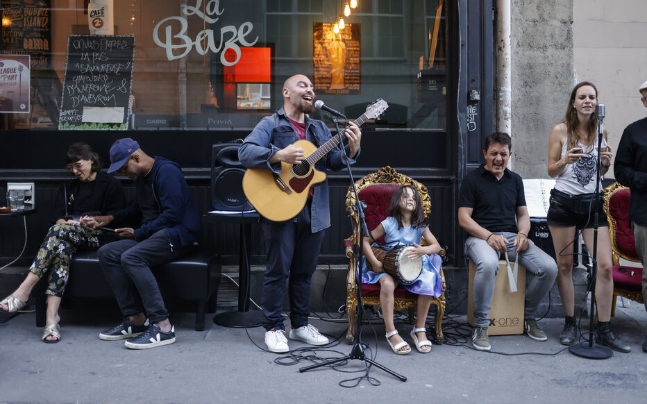

Festival of Music in Paris
| Culture (French) | Culture (English) | Food | Art | Museums | Fashion | Architecture | Festival of Music | Contact Us |
Paris is a city known for its rich culture, including arts, music, museums, festivals, and other entertainment. One of the most popular music festivals in Paris is the Fête de la Musique, also known as Music Day, which takes place annually on June 21st. This festival celebrates the diversity and scope of musical practices in all genres, and thousands of musicians gather in the streets, bars, and cafes to give free public performances. The festival first took place in Paris in 1982 and has since become an international phenomenon, celebrated on the same day in more than 700 cities in 120 countries, including India, Germany, Italy, Greece, Russia, Australia, Peru, Brazil, Ecuador, Mexico, Canada, the United States, the UK, and Japan.
Another popular festival in Paris is the Paris Summer Arts Festival, which brings free music, dance, art, and other cultural events to the streets of the city. This festival is a great way to immerse oneself in French culture and experience the arts in unexpected places, such as on the Seine riverbanks, in courtyards of mansion houses, on lawns, in woods, parks, and gardens, and in museum galleries temporarily transformed for a concert or a performance. Other festivals in Paris include the Carnaval de Paris, the Festival de l'Ourcq, the Paris Quartier d'Été, and the Paris Plages during the summer, the Journées du Patrimoine, and the Techno parade in autumn, and a packed calendar of festive events for the Christmas season.